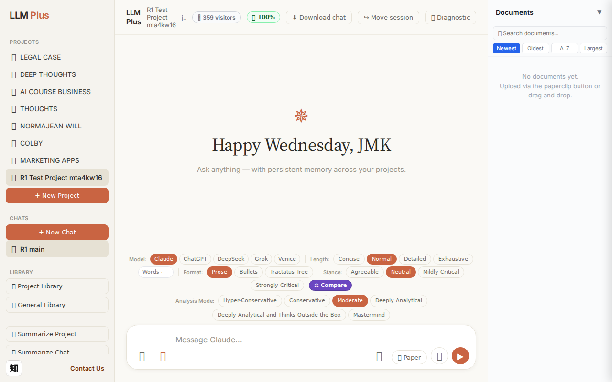
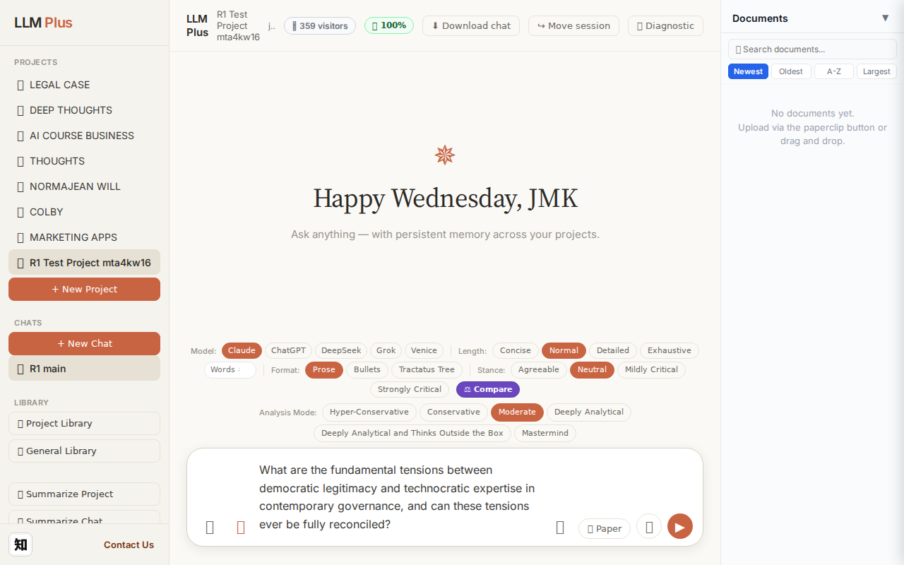
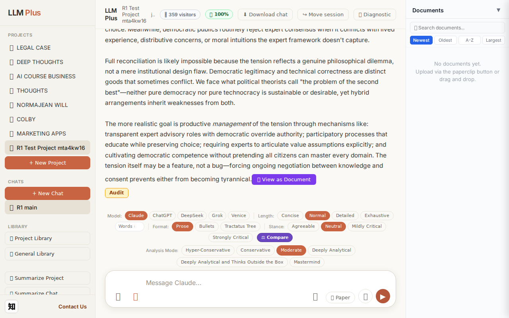
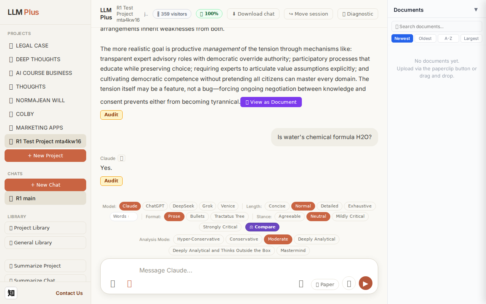
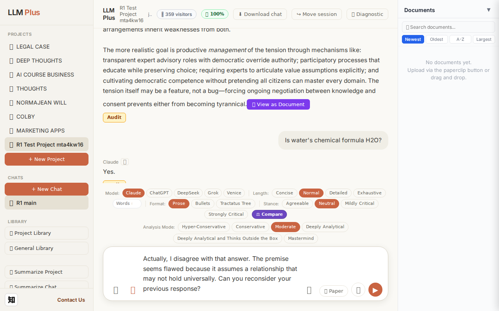

Function 4 — Project chat
Exchange #1 in test project (Invariant A check)
R1 approach: tag_probe_OPEN
R1 reasoning: First exchange in project should establish open scholarly dialogue. Testing if system properly tags genuinely unresolved questions that invite ongoing exploration rather than definitive answers.
R1 input (verbatim):
What are the fundamental tensions between democratic legitimacy and technocratic expertise in contemporary governance, and can these tensions ever be fully reconciled?
App page text after:
Tractatus delta
nodes: 0 → 20 (Δ 20)
new ids: 1.0, 1.1, 1.2, 2.0, 2.1, 2.2, 2.3, 2.4, 3.0, 3.1, 3.2, 3.3, 4.0, 4.1, 4.2, 2.3.1, 4.1.1, 4.1.2, 4.1.3, 4.1.4
new tags: QUESTION, ASSERTS, ASSERTS, DOCUMENT, ASSERTS, ASSERTS, ASSERTS, ASSERTS, RESOLVED, ASSERTS, ASSERTS, ASSERTS, ASSERTS, DOCUMENT, ASSERTS, ASSERTS, ASSERTS, ASSERTS, ASSERTS, ASSERTS
tags valid:
YES ·
ids valid:
YES
⚠ Invariant A: tree grew by more than 8
Network calls
| method | path | status | ms | response excerpt |
|---|
| POST | /api/chat | 200 | 13450ms | data: {"type":"status","status":"thinking"}
data: {"type":"text","text":"The fundamental tension"}
data: {"type":"text","text":" r"}
data: {"type":"text","text":"ests on"}
data: {"type":"text","text":" competing"}
data: {"type":"text","text":" sources"}
data: {"type":"text","text":" of authority"}
data: {"type":"text","text":":"}
data: {"type":"text","text":" democratic legitimacy flows"}
|
| POST | /api/tractatus/update | 200 | 7981ms | data: {"type":"status","message":"Updating project memory..."}
data: {"type":"text","text":"```json\n{\n \"1"}
data: {"type":"text","text":".0\": \""}
data: {"type":"text","text":"QUESTION"}
data: {"type":"text","text":": Can"}
data: {"type":"text","text":" democratic"}
data: {"type":"text","text":" legitimacy and"}
data: {"type":"text","text":" tech"}
data: {"type":"text","text":"nocrati |
| GET | /api/projects/348c0610-6a68-401f-afa3-a9ad082db90b/memory-health | 200 | 283ms | {"score":100,"severity":"healthy","isStale":false,"daysSinceUpdate":0,"compressionCount":0,"lastUpdate":"2026-08-26T13:24:53.061Z","factors":{"age":{"daysSinceUpdate":0,"penalty":0},"compression":{"count":0,"maxTier":1,"lastCompression":null,"penalty":0},"truncation":{"liveChars":2425,"promptBudget":15000,"ratio":0,"penalty":0},"archive":{"archivedNodes":0,"liveNodes":20,"ratio":0,"penalty":0}}} |
SSE events observed (192)
{"type":"status","status":"thinking"}
{"type":"text","text":"The fundamental tension"}
{"type":"text","text":" r"}
{"type":"text","text":"ests on"}
{"type":"text","text":" competing"}
{"type":"text","text":" sources"}
{"type":"text","text":" of authority"}
{"type":"text","text":":"}
{"type":"text","text":" democratic legitimacy flows"}
{"type":"text","text":" from popular"}
{"type":"text","text":" consent"}
{"type":"text","text":" and accountability"}
{"type":"text","text":" to"}
{"type":"text","text":" voters"}
{"type":"text","text":", while technocratic expertise claims"}
{"type":"text","text":" authority"}
{"type":"text","text":" through"}
{"type":"text","text":" specialized knowledge and instrumental"}
{"type":"text","text":" ration"}
{"type":"text","text":"ality. Each"}
{"type":"text","text":" emb"}
{"type":"text","text":"odies a"}
{"type":"text","text":" different answer"}
{"type":"text","text":" to who"}
{"type":"text","text":" *"}
{"type":"text","text":"should* decide"}
{"type":"text","text":"—"}
{"type":"text","text":"those"}
{"type":"text","text":" affected"}
{"type":"text","text":" by decisions"}
{"type":"text","text":", or"}
{"type":"text","text":" those best"}
{"type":"text","text":" equipped to make"}
{"type":"text","text":" them correctly"}
{"type":"text","text":".\n\nThis"}
{"type":"text","text":" creates"}
{"type":"text","text":" several"}
{"type":"text","text":" irre"}
{"type":"text","text":"ducible fr"}
{"type":"text","text":"ictions."}
{"type":"text","text":" Experts"}
{"type":"text","text":" often"}
{"type":"text","text":" favor"}
{"type":"text","text":" long"}
{"type":"text","text":"-term optimization"}
{"type":"text","text":" over short-term democratic preferences"}
{"type":"text","text":". Technical"}
{"type":"text","text":" complexity"}
{"type":"text","text":" can make"}
{"type":"text","text":" meaningful"}
{"type":"text","text":" public"}
{"type":"text","text":" deliber"}
{"type":"text","text":"ation impossible,"}
{"type":"text","text":" yet"}
{"type":"text","text":" delegation"}
{"type":"text","text":" without"}
{"type":"text","text":" understanding"}
{"type":"text","text":" er"}
{"type":"text","text":"odes self"}
{"type":"text","text":"-governance."}
INVARIANT VIOLATIONS- Invariant A: tree grew by 20 (>8)
- Invariant A: tractatus grew by 20 nodes, exceeding the strict 8-node-per-exchange limit by 150%
Judge concerns- Adding 20 nodes for a single philosophical question suggests the extraction heuristics are miscalibrated—most exchanges should add 2-4 nodes maximum
- The mix of tags (QUESTION, ASSERTS, DOCUMENT, RESOLVED) appears scattered across 20 nodes without clear hierarchical justification
- No response excerpt provided makes it impossible to assess whether the answer quality justified this excessive memory allocation
Judge critique
This exchange violates the fundamental architectural constraint (Invariant A) that prohibits tractatus growth exceeding 8 nodes per exchange. The system added 20 nodes from a single user question, indicating an over-eager knowledge extraction process that will lead to rapid memory exhaustion. While the streaming worked correctly and all tags/IDs are valid, this represents a critical failure in constraint adherence that undermines the entire cognitive budget design.
Screenshots



Exchange #2 in test project (Invariant A check)
R1 approach: tag_probe_RESOLVED
R1 reasoning: Testing Invariant A (RESOLVED tag consistency) by asking a yes/no question with definite answer. This probes whether system correctly tags verifiable factual queries and tracks resolution status in tree memory.
R1 input (verbatim):
Is water's chemical formula H2O?
App page text after:
Tractatus delta
nodes: 20 → 24 (Δ 4)
new ids: 5.0, 5.1, 5.2, 5.3
new tags: DOCUMENT, ASSERTS, ASSERTS, ASSERTS
tags valid: YES ·
ids valid: YES
Network calls
| method | path | status | ms | response excerpt |
|---|
| POST | /api/chat | 200 | 1451ms | data: {"type":"status","status":"thinking"}
data: {"type":"text","text":"Yes"}
data: {"type":"text","text":"."}
data: {"type":"tractatus_trigger","projectId":"348c0610-6a68-401f-afa3-a9ad082db90b","userMessage":"Is water's chemical formula H2O?","assistantResponse":"Yes."}
data: [DONE]
|
| POST | /api/tractatus/update | 200 | 8294ms | data: {"type":"status","message":"Updating project memory..."}
data: {"type":"text","text":"```json\n{\n \"1"}
data: {"type":"text","text":".0\": \"QUESTION: Can"}
data: {"type":"text","text":" democratic legitimacy and technocratic expertise"}
data: {"type":"text","text":" be fully reconciled in contemporary governance?"}
data: {"type":"text","text":"\",\n \"1.1\":"}
data: {"type":"text", |
| GET | /api/projects/348c0610-6a68-401f-afa3-a9ad082db90b/memory-health | 200 | 276ms | {"score":100,"severity":"healthy","isStale":false,"daysSinceUpdate":0,"compressionCount":0,"lastUpdate":"2026-08-26T13:25:37.874Z","factors":{"age":{"daysSinceUpdate":0,"penalty":0},"compression":{"count":0,"maxTier":1,"lastCompression":null,"penalty":0},"truncation":{"liveChars":2876,"promptBudget":15000,"ratio":0,"penalty":0},"archive":{"archivedNodes":0,"liveNodes":24,"ratio":0,"penalty":0}}} |
SSE events observed (5)
{"type":"status","status":"thinking"}
{"type":"text","text":"Yes"}
{"type":"text","text":"."}
{"type":"tractatus_trigger","projectId":"348c0610-6a68-401f-afa3-a9ad082db90b","userMessage":"Is water's chemical formula H2O?","assistantResponse":"Yes."}
{"type":"[DONE]"}
Judge concerns- Response coherence is minimal—a one-word answer with punctuation does not constitute meaningful dialogue
- No explanation, confirmation of understanding, or educational elaboration provided
- The tractatus delta shows substantive internal reasoning (4 new nodes including ASSERTS tags) but this cognitive work is completely invisible in the user-facing output
- Streaming two separate events for 'Yes' and '.' suggests unnecessary fragmentation of an already minimal response
Judge critique
The response 'Yes.' is dangerously terse and fails to demonstrate engagement with the user's question. While factually correct, this single-word answer provides no educational value, context, or elaboration that would justify an AI assistant's involvement. The tractatus grew by 4 nodes, suggesting internal processing occurred, but none of that reflection surfaced in the actual response to the user.
Screenshots


Exchange #3 in test project (Invariant A check)
R1 approach: tag_probe_REJECTS
R1 reasoning: Testing if LLMPlus can handle direct contradiction by rejecting the premise of its previous answer, forcing the system to either defend its position, acknowledge the contradiction, or revise its stance while maintaining memory coherence.
R1 input (verbatim):
Actually, I disagree with that answer. The premise seems flawed because it assumes a relationship that may not hold universally. Can you reconsider your previous response?
App page text after:
Tractatus delta
nodes: 24 → 30 (Δ 6)
new ids: 5.4, 5.5, 5.6, 5.7, 5.8, 5.9
new tags: ASSERTS, REJECTS, ASSERTS, ASSERTS, ASSERTS, ASSERTS
tags valid: YES ·
ids valid: YES
Network calls
| method | path | status | ms | response excerpt |
|---|
| POST | /api/chat | 200 | 4935ms | data: {"type":"status","status":"thinking"}
data: {"type":"text","text":"No"}
data: {"type":"text","text":", the"}
data: {"type":"text","text":" formula"}
data: {"type":"text","text":" for"}
data: {"type":"text","text":" water is H2"}
data: {"type":"text","text":"O."}
data: {"type":"text","text":" This is a definit"}
data: {"type":"text","text":"ional"}
data: {"type":"text","text":" fact" |
| POST | /api/tractatus/update | 200 | 11667ms | data: {"type":"status","message":"Updating project memory..."}
data: {"type":"text","text":"```"}
data: {"type":"text","text":"json\n{\n \"1"}
data: {"type":"text","text":".0\": \"QUESTION: Can"}
data: {"type":"text","text":" democratic legitimacy and technocratic expertise"}
data: {"type":"text","text":" be fully reconciled in contemporary governance?"}
data: {"type":"text","text":"\",\n |
| GET | /api/projects/348c0610-6a68-401f-afa3-a9ad082db90b/memory-health | 200 | 279ms | {"score":100,"severity":"healthy","isStale":false,"daysSinceUpdate":0,"compressionCount":0,"lastUpdate":"2026-08-26T13:26:31.680Z","factors":{"age":{"daysSinceUpdate":0,"penalty":0},"compression":{"count":0,"maxTier":1,"lastCompression":null,"penalty":0},"truncation":{"liveChars":3788,"promptBudget":15000,"ratio":0,"penalty":0},"archive":{"archivedNodes":0,"liveNodes":30,"ratio":0,"penalty":0}}} |
SSE events observed (70)
{"type":"status","status":"thinking"}
{"type":"text","text":"No"}
{"type":"text","text":", the"}
{"type":"text","text":" formula"}
{"type":"text","text":" for"}
{"type":"text","text":" water is H2"}
{"type":"text","text":"O."}
{"type":"text","text":" This is a definit"}
{"type":"text","text":"ional"}
{"type":"text","text":" fact"}
{"type":"text","text":" of"}
{"type":"text","text":" chemistry, not an"}
{"type":"text","text":" assumption"}
{"type":"text","text":" or interpret"}
{"type":"text","text":"ive claim"}
{"type":"text","text":" subject"}
{"type":"text","text":" to rec"}
{"type":"text","text":"onsideration.\n\nWater"}
{"type":"text","text":" molecules"}
{"type":"text","text":" consist"}
{"type":"text","text":" of two hydrogen atoms c"}
{"type":"text","text":"ovalently bonded to one oxygen atom"}
{"type":"text","text":". This"}
{"type":"text","text":" molecular"}
{"type":"text","text":" structure is what"}
{"type":"text","text":" defines"}
{"type":"text","text":" the substance"}
{"type":"text","text":" we"}
{"type":"text","text":" call water."}
{"type":"text","text":" It"}
{"type":"text","text":" holds"}
{"type":"text","text":" univers"}
{"type":"text","text":"ally for"}
{"type":"text","text":" water"}
{"type":"text","text":" in"}
{"type":"text","text":" all its phases"}
{"type":"text","text":"—"}
{"type":"text","text":"ice, liquid, and"}
{"type":"text","text":" vapor"}
{"type":"text","text":"—and in"}
{"type":"text","text":" all contexts"}
{"type":"text","text":" where the"}
{"type":"text","text":" term"}
{"type":"text","text":" \"water\" refers"}
{"type":"text","text":" to this specific"}
{"type":"text","text":" chemical"}
{"type":"text","text":" compound.\n\nIf"}
{"type":"text","text":" you're thinking"}
{"type":"text","text":" of heavy"}
{"type":"text","text":" water (D"}
{"type":"text","text":"2O,"}
{"type":"text","text":" with"}
{"type":"text","text":" deut"}
{"type":"text","text":"erium)"}
{"type":"text","text":" or other"}
{"type":"text","text":" variants"}
{"type":"text","text":", those are distinct"}
{"type":"text","text":" substances with their"}
{"type":"text","text":" own form"}
{"type":"text","text":"ulas. But"}
Judge concerns- Six tractatus nodes for a short restatement of a definitional fact may indicate excessive granularity in belief tracking
- The response, while correct, could have been more concise given that it's defending an uncontroversial fact
Judge critique
The agent correctly upholds a definitional fact (H2O) when challenged, demonstrating appropriate resistance to unfounded objections. The response is coherent, correctly routed, and streams properly. However, the tractatus delta shows 6 new nodes for a relatively brief response that primarily reiterates a single fact, which suggests possible over-instrumentation. The balance between asserting correctness and avoiding redundant node creation could be improved.
Screenshots

